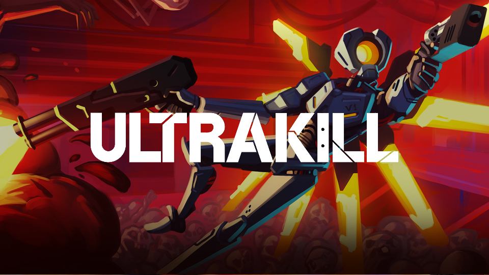

ULTRAKILL
A fast-paced, retro-style first-person shooter revolving around Dante's Divine Comedy.
Publishing Info
- Creator and Musician: Arsi "Hakita" Patela
- Publishing Company New Blood Interactive
- Publishing Date: 3 September 2020
- Available Platforms: Steam, itch.io (Demo)

Game Details
- Genre: Movement Shooter
- Players: 1 (Single Player)
- Art Style: Gore, Rough
- Leaderboards: Overall score and Style Rank
Whenever I fight a boss, my mind becomes clouded in a deep red fog that smells of copper and lead. I lose the ability to perceive, only left with the ability to punch and fire into the endless void of screeching metal and splattering blood that reaches my eyes but does not pass to my brain. And when I awake from the emptiness, I'm met with the death screen. My feeble mortal mind lacks the speed to process this game. This is an experience that can only be comprehended by the supercomputers that populate its world. When I stare into the void it lunges back and steals my eyes.
-gen6b on Steam
Sources
MobyGames URL: https://www.mobygames.com/game/150113/ultrakill/
Steam URL: https://store.steampowered.com/app/1229490/ULTRAKILL/